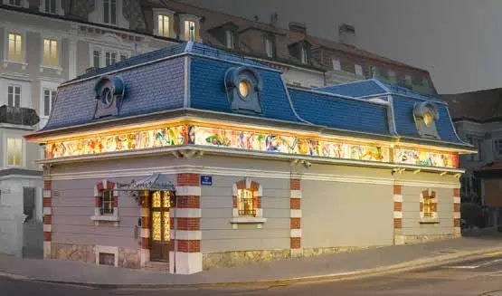

Le magazine du savoir-faire suisse
L'annuaire des entreprises
qui font la Suisse.
786 entreprises, 1184 articles et 31 magazines : horlogerie, industrie, santé, grands travaux, collectivités.
786entreprises & institutions
1184articles & interviews
31magazines à télécharger
17cantons représentés
Explorer par thème
Tout voir
Horlogerie & microtechnique
253 entreprises · 496 articles

Industrie & sous-traitance
299 entreprises · 487 articles

Construction & génie civil
148 entreprises · 156 articles

Architecture, ingénierie & immobilier
80 entreprises · 86 articles

Énergie & environnement
147 entreprises · 162 articles

Santé & médical
138 entreprises · 171 articles

Collectivités & institutions publiques
136 entreprises · 197 articles

Économie, finance & services
160 entreprises · 196 articles

Formation, recherche & innovation
137 entreprises · 169 articles

Territoire, tourisme & culture
92 entreprises · 125 articles

Transport & mobilité
102 entreprises · 125 articles
Derniers magazines
Tous les PDF


À la une
Tous les articles Interview
InterviewEPHJ 2026 – Un salon unique au monde par son positionnement
Interview d'Alexandre Catton, directeur de l'EPHJ
 Interview
InterviewBergauer AG: «Wir bieten schlüsselfertige Gesamtsysteme für das Verkehrsmanagement»
Interview mit Urs Friess, Managing Director (aussi en français et en italien)
 Interview
InterviewAFDT – Faire la promotion des métiers du décolletage
Interview de Grégory Affolter, président de l'AFDT
 Interview
InterviewKlinik für Orthopädische Chirurgie und Traumatologie HFR
Interview mit Moritz Tannast, Professor und Chefarzt der Klinik für Orthopädische Chirurgie und Traumatologie

PublireportageTSM Compagnie d’Assurances – L’assureur sur-mesure du monde horloger
Assurance transport et risques spéciaux depuis La Chaux-de-Fonds
 Publireportage
PublireportageAtelier 94 Architecture SA – Dessiner le futur de la ville de Nyon
Dans l'annuaire
Tout l'annuaire
A Carré Architecture et Aménagement SA / A Carré SA
Bureau d'architectes et développement immobilier

Aargauische Industrie- und Handelskammer (AIHK)
Chambre de commerce et association patronale

Abarthel Sàrl
Masses oscillantes, frappe et cadrans émail grand feu

Acronet Sàrl
Travaux acrobatiques sur cordes

Adax SA
Décolletage de haute précision

Admo Plastique SA
Injection thermoplastique de précision

AEE Suisse – Dachorganisation der Wirtschaft für erneuerbare Energien und Energieeffizienz
Association faîtière des énergies renouvelables et de l’efficacité énergétique

AEE Suisse romande
Association – énergies renouvelables et efficacité énergétique